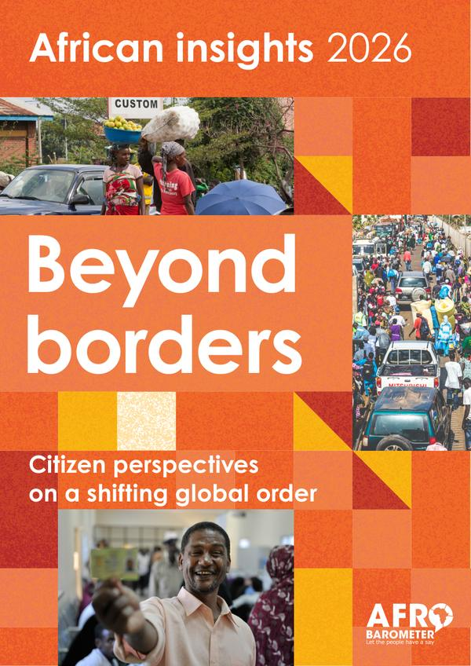
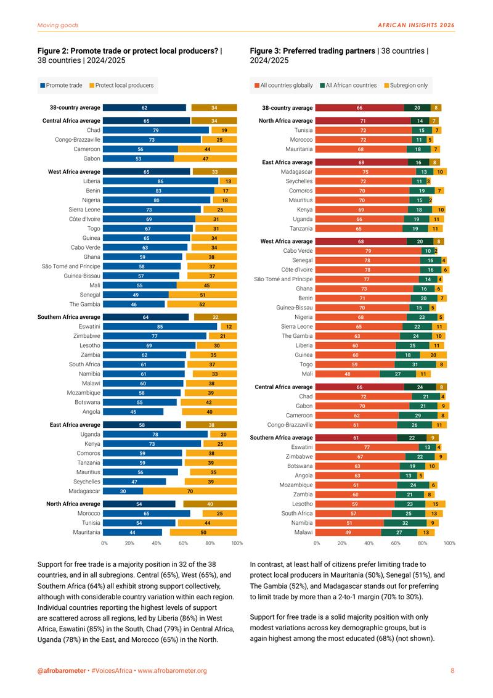
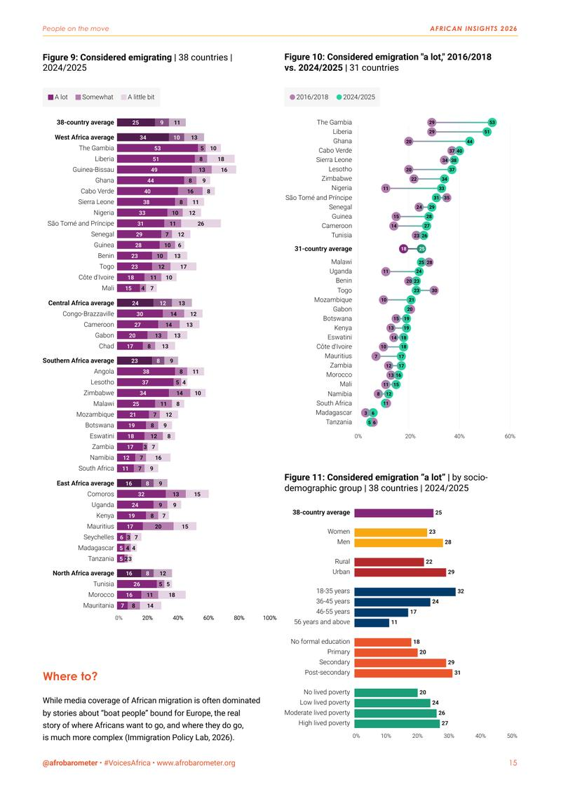
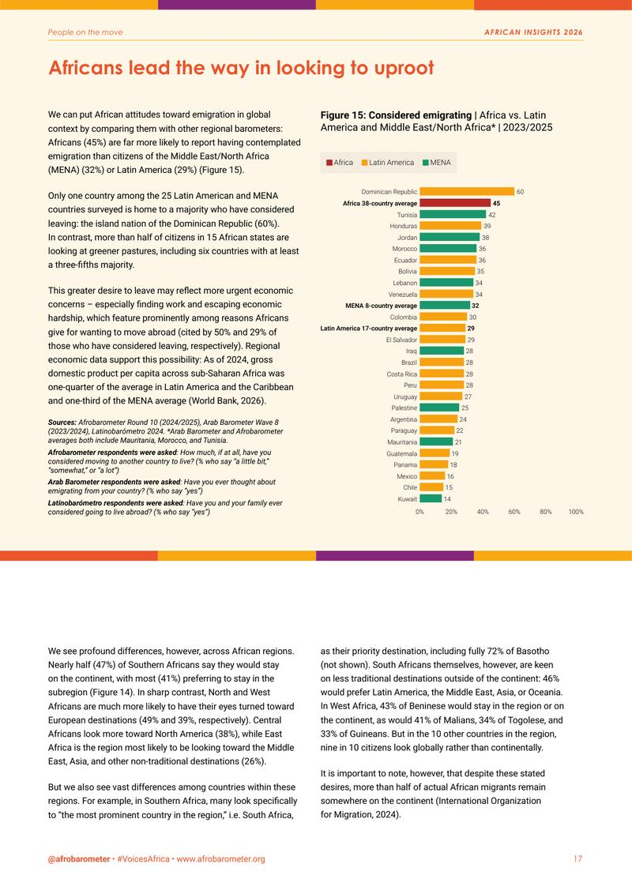
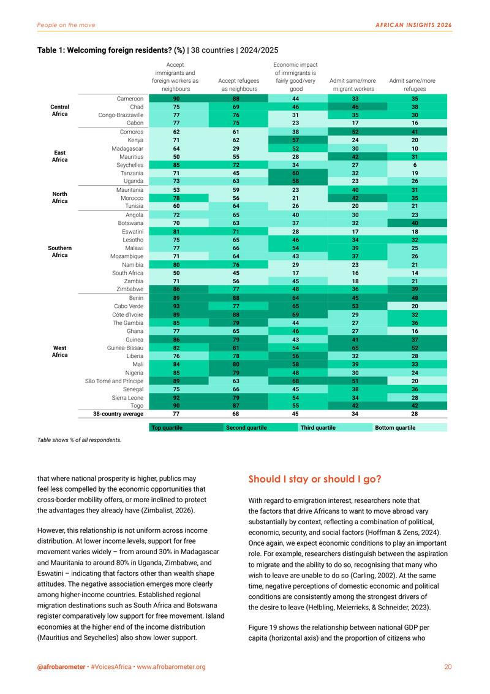
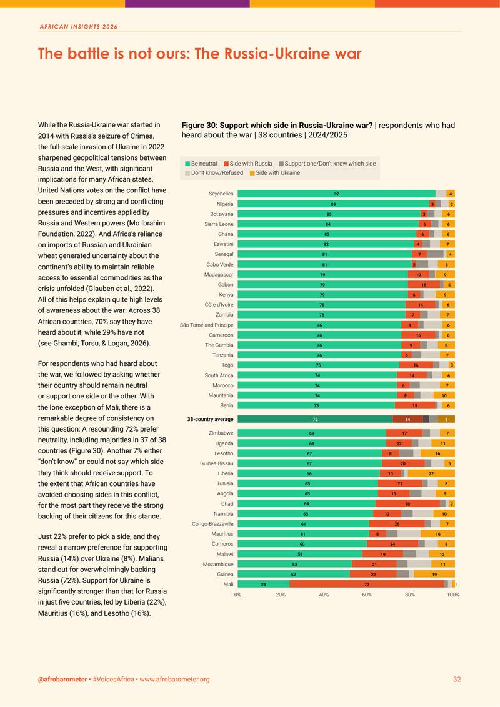
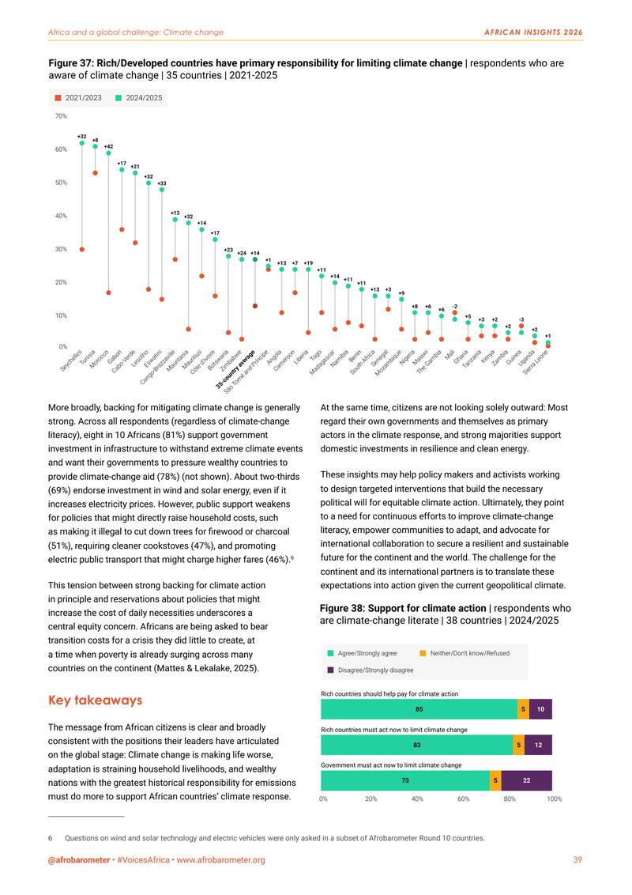
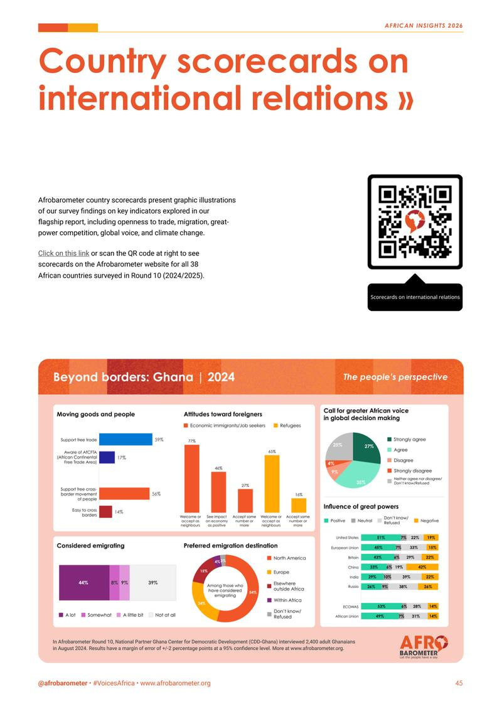

Beyond borders
African insights 2026. Citizen perspectives on a shifting global order.
Afrobarometer’s flagship report for 2026 asks how Africans see a world in flux: free trade under the AfCFTA, migration, the great powers, the continent’s voice in global institutions and climate action. Survey data from 38 countries, carried by 38 figures and 4 tables in a single chart system, from a 38-country heatmap to one-page country scorecards.
Colophon, p. 2: Report design by nutgraf.studio
- Pages
- 48in English
- Figures
- 38plus 4 tables
- Countries
- 38Round 10 survey, 2024/2025
- Data
- Face-to-face interviews, nationally representative samples
- Our role
- Report design: editorial and chart design
- Client
- Afrobarometer, pan-African research network



p. 8Free trade or protection? 
p. 15Who is thinking of leaving 
p. 17Africa against two other regions 
p. 20A 38-country heatmap p. 28Rating the major powers (rebuilt as a dashboard below) 
p. 32The Russia–Ukraine war 
p. 39Who should act on climate 
p. 45One country on one page